Mahlzeit.
Knödel, Kraut und Braten, Fisch aus dem See, Wild aus der Gegend und zum Schluss ein Kaiserschmarrn. Wir kochen die Klassiker der Alpen, mit gutem Handwerk und schön angerichtet.
Mehr über das Gasthaus


Ein neues Gasthaus in einem alten, historischen Haus in Eggstätt.
Am Kirchplatz in Eggstätt zieht ein neues Gasthaus in ein altes, historisches Haus ein.
Wir kochen alpenländisch, mit guten Zutaten aus der Region und viel Handwerk. Dazu gibt es eine Vinothek, einen Biergarten, eine Greißlerei, eine Bar und einen Festsaal – und für jeden ein Tischerl.
Kommt zu uns, wenn Ihr gut essen, ein Glaserl trinken, draußen sitzen, etwas mitnehmen oder feiern wollt.
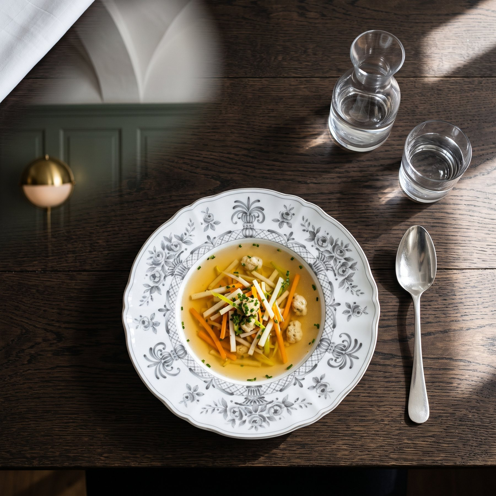
Knödel, Kraut und Braten, Fisch aus dem See, Wild aus der Gegend und zum Schluss ein Kaiserschmarrn. Wir kochen die Klassiker der Alpen, mit gutem Handwerk und schön angerichtet.
Mehr über das Gasthaus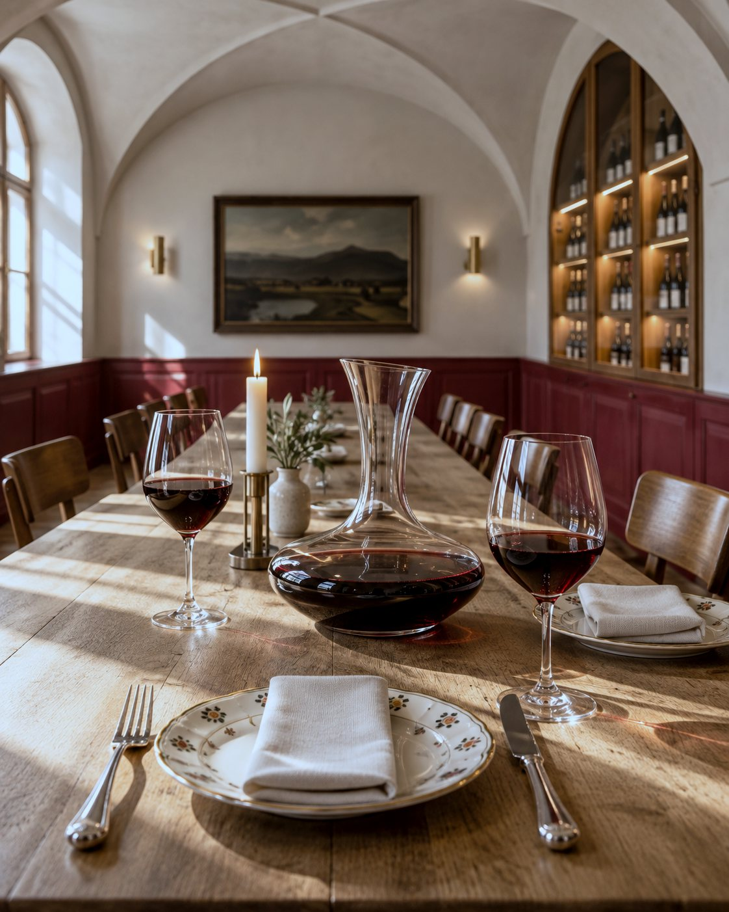
Unter dem Gewölbe, zwischen dunkelroten Wänden und leuchtenden Nischen, stehen die Flaschen, die uns selber Freude machen. Wir nehmen uns Zeit für Eure Fragen.
Mehr über die Vinothek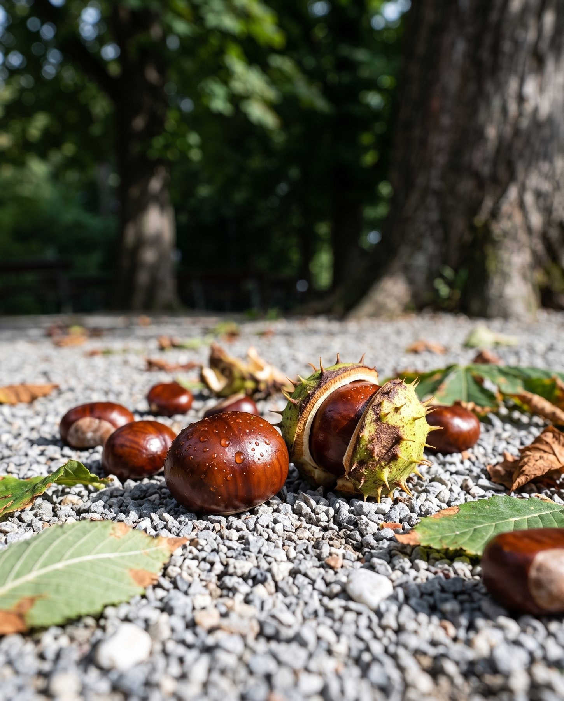
Wenn die Sonne scheint, gehört der Nachmittag dem Biergarten: eine Brotzeit, a kühle Halbe und Schatten unter alten Bäumen.
Mehr über den Biergarten
Brot, Käse aus den Bergen, Eingemachtes und Feines aus unserer Küche. In der Greißlerei nehmt Ihr mit, was Euch bei uns geschmeckt hat.
Mehr über die Greißlerei
Eine lange Theke aus Eiche, Terrazzo und Messing. Hier beginnt der Abend mit dem Aperitif, und manchmal hört er hier auch auf.
Mehr über die Bar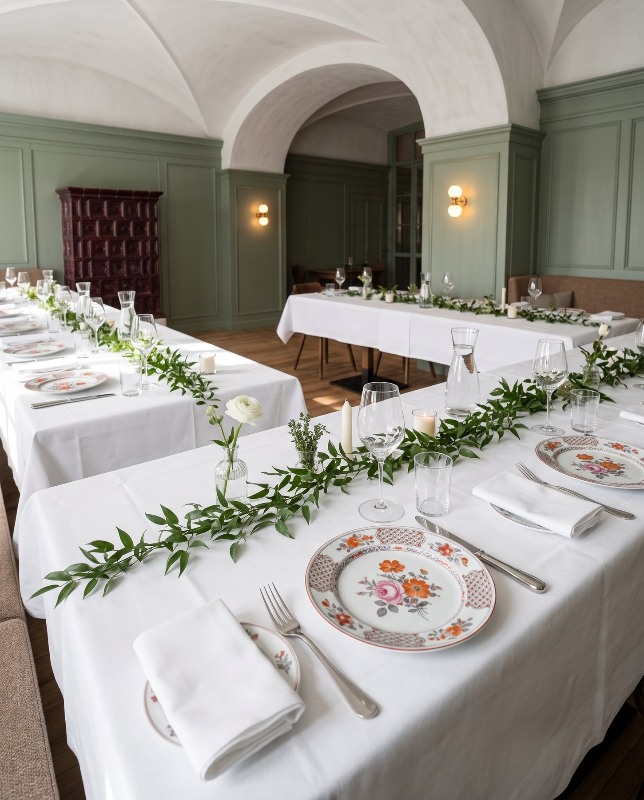
Lange Tafeln, weißes Leinen, Kerzen und frisches Grün. Für Hochzeiten, Taufen und Geburtstage decken wir so, dass der Tag lange nachklingt.
Mehr über den Festsaal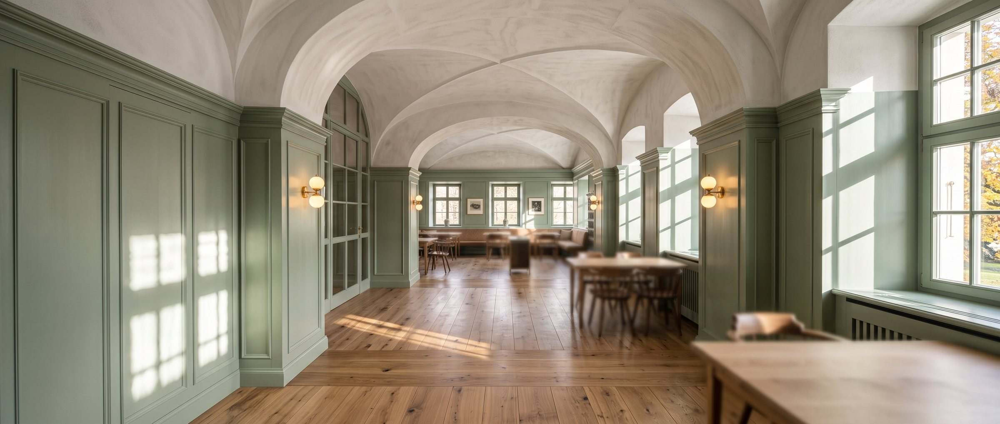
Dicke Mauern, weiße Kreuzgewölbe, tiefe Fensternischen. In dieses Haus zieht jetzt ein Gasthaus ein – mit Eichendielen, Salbeigrün, Messing und handbemaltem Porzellan.
Das Haus entdecken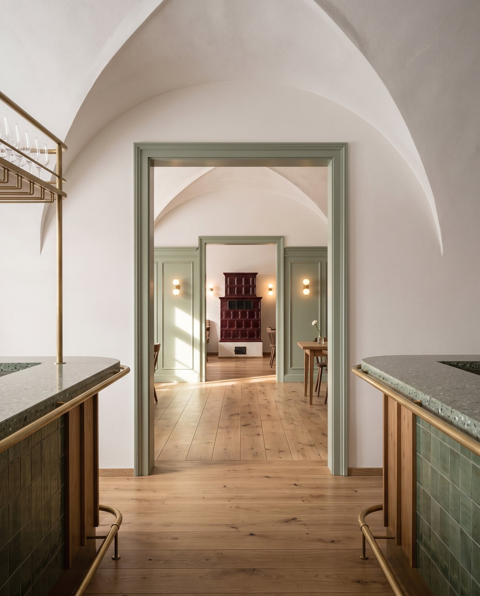
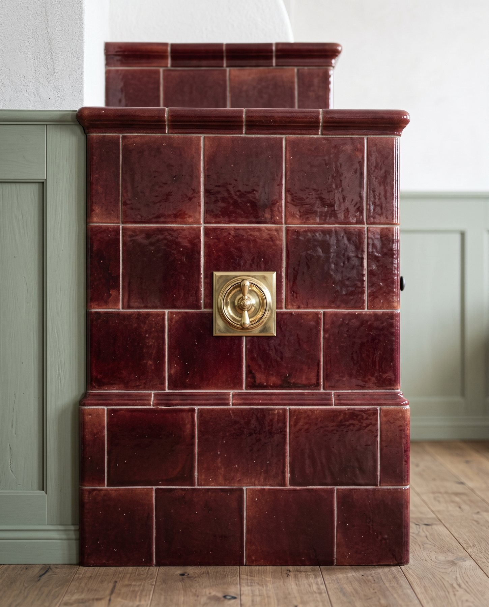
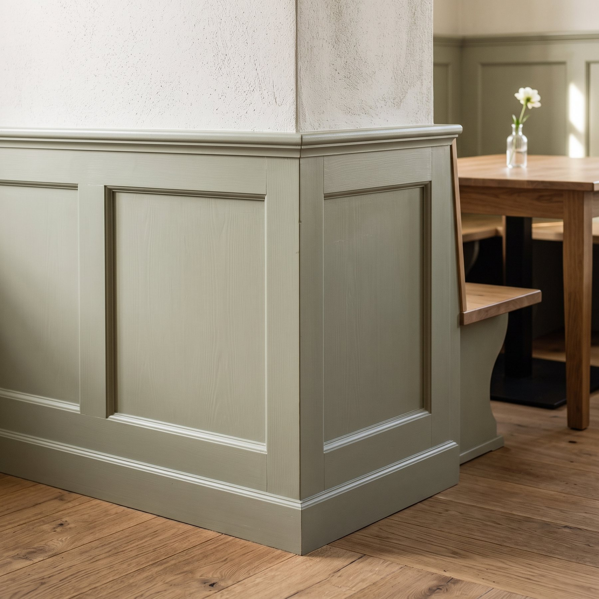

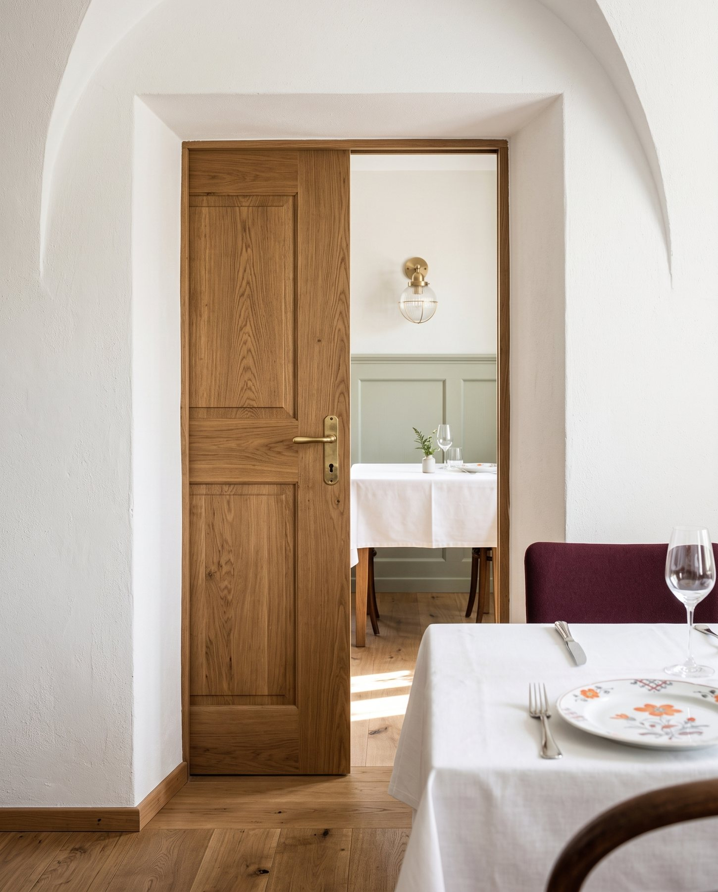
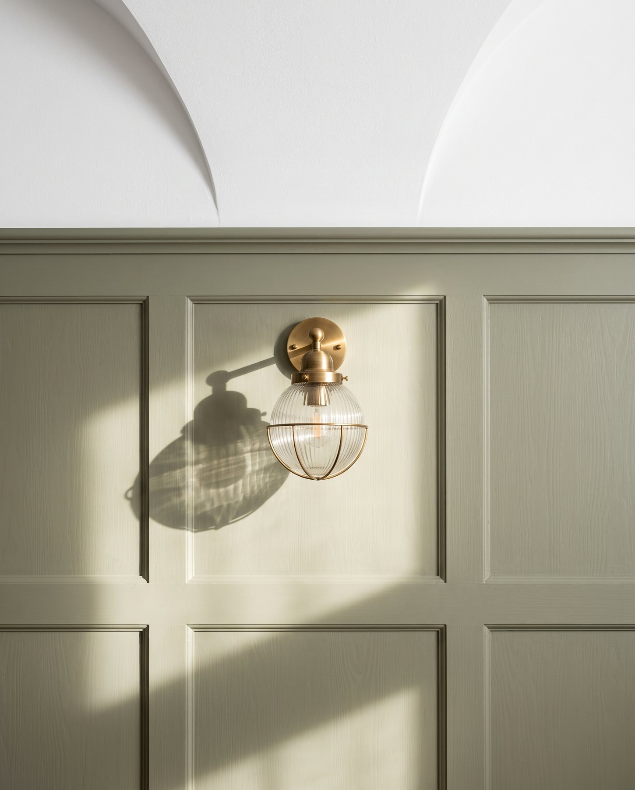

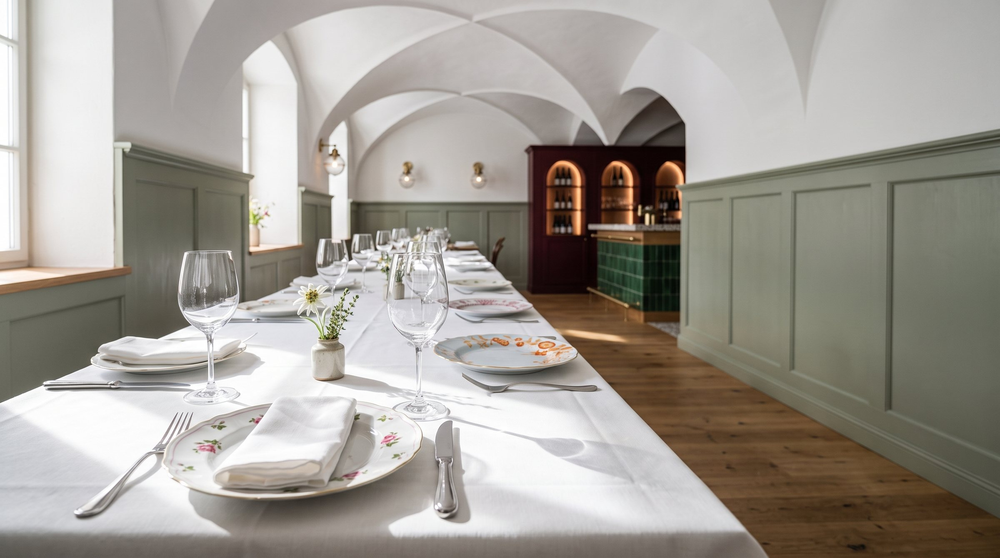
Hochzeiten, Taufen, Geburtstage oder das Fest mit der ganzen Firma: Erzählt uns, was Ihr feiern wollt. Wir melden uns mit einem Vorschlag für Menü, Tafel und Ablauf.
Fest anfragenFERUN Alte Post
Kirchplatz 2
83125 Eggstätt
Mitten im Ort, zwischen Chiemsee und der Eggstätter Seenplatte.
Geben wir hier bekannt, sobald wir aufsperren.